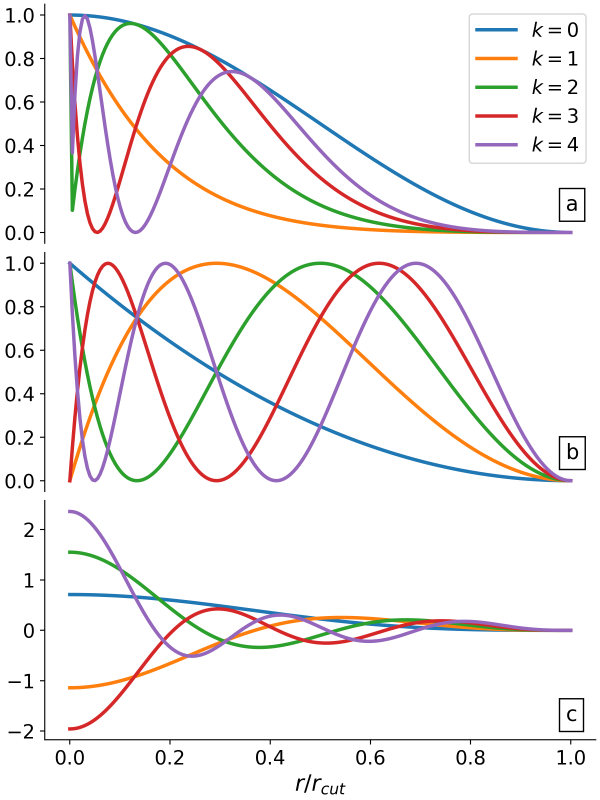
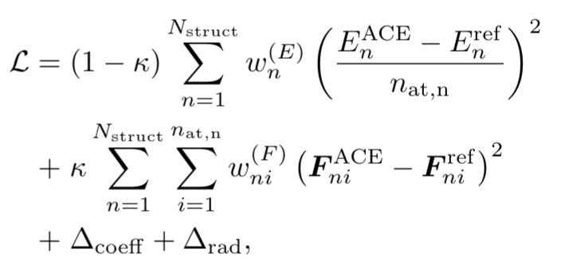
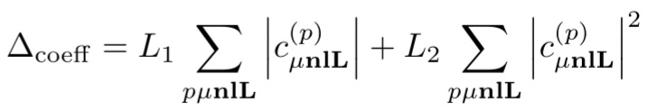
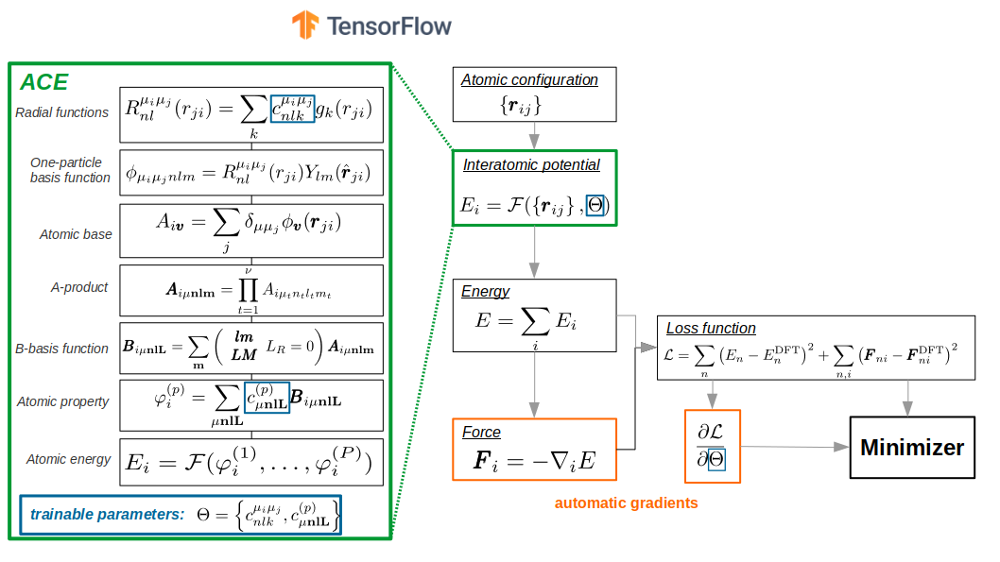

Fitting an Atomic Cluster Expansion (ACE) machine learning interatomic potential #
Import and load #
import pyiron_potentialfit
from pyiron import Project
from collections import Counter
import pandas as pd
import matplotlib.pyplot as plt
fontsize=16
As we saw in the last notebook, we fit on the data generated and stored in TrainingContainer. We start by unpacking a pre-prepared dataset.
pr_data = Project('.')
pr_data.unpack('training_export')
Now we create a project for fitting
pr = Project('fit_pace')
Loading training containers and selecting training subset #
training_container = pr_data['training/full']
Lets visualize all the data we have
training_container.plot.energy_volume(crystal_systems=True)
plt.xlabel(r"atomic volume, $\mathrm{\AA}$",fontsize=fontsize)
plt.ylabel(r"atomic energy, eV/atom",fontsize=fontsize)
training_container.to_pandas()["number_of_atoms"].hist(bins=30);
plt.xlabel("Number of atoms in structure",fontsize=fontsize)
Lets filter down the dataset for today’s tutorial
df=training_container.to_pandas()
df["energy_per_atom"]=df["energy"]/df["number_of_atoms"]
df["comp_dict"]=df["atoms"].map(lambda at: Counter(at.get_chemical_symbols()))
for el in ["Al","Li"]:
df["n"+el]=df["comp_dict"].map(lambda d: d.get(el,0))
df["c"+el]=df["n"+el]/df["number_of_atoms"]
Select only Al-fcc
al_fcc_df = df[df["name"].str.contains("Al_fcc")]
al_fcc_df.shape
only Li-bcc
li_bcc_df = df[df["name"].str.contains("Li_bcc")]
li_bcc_df.shape
and AlLi structures that are within 0.1 eV/atom above AlLi ground state (min.energy structure)
alli_df = df[df["cAl"]==0.5]
alli_df=alli_df[alli_df["energy_per_atom"]<=alli_df["energy_per_atom"].min()+0.1]
alli_df.shape
small_training_df = pd.concat([al_fcc_df, li_bcc_df, alli_df])
small_training_df.shape
small_training_df["number_of_atoms"].hist(bins=100);
Select only sctructures smaller than 10 atoms per structures
small_training_df=small_training_df[small_training_df["number_of_atoms"]<=10].sample(n=100, random_state=42)
small_training_df.shape
Pack them into training container
small_tc = pr.create.job.TrainingContainer("small_AlLi_training_container", delete_existing_job=True)
small_tc.include_dataset(small_training_df)
small_tc.save()
small_tc.plot.energy_volume(crystal_systems=True)
Create PacemakerJob #
job = pr.create.job.PacemakerJob("pacemaker_job")
job.add_training_data(small_tc)
PACE potential fitting setup #
Overview of settings#
job.input
Potential interatomic distance cutoff#
job.cutoff=6.0
Specification of ACE potential #
PACE potential specification consists of three parts:
1. Embeddings#
i.e. how atomic energy \(E_i\) depends on ACE properties/densities \(\varphi\). Linear expansion \(E_i = \varphi\) is the trivial. Non-linear expansion, i.e. those, containing square root, gives more flexiblity and accuracy of final potential
Embeddings for ALL species (i.e. Al and Li):
non-linear
FinnisSinclairShiftedScaled2 densities
fs_parameters’: [1, 1, 1, 0.5]: $\(E_i = 1.0 * \varphi(1)^1 + 1.0 * \varphi(2)^{0.5} = \varphi^{(1)} + \sqrt{\varphi^{(2)}} \)$
job.input["potential"]["embeddings"]
2. Radial functions#
Radial functions are orthogonal polynoms example:
(a) Exponentially-scaled Chebyshev polynomials (λ = 5.25)
(b) Power-law scaled Chebyshev polynomials (λ = 2.0)
(c) Simplified spherical Bessel functions

Radial functions specification for ALL species pairs (i.e. Al-Al, Al-Li, Li-Al, Li-Li):
based on the Simplified Bessel
cutoff \(r_c=6.0\)
job.input["potential"]["bonds"]
3. B-basis functions#
B-basis functions for ALL species type interactions, i.e. Al-Al, Al-Li, Li-Al, Li-Li blocks:
maximum order = 4, i.e. body-order 5 (1 central atom + 4 neighbour densities)
nradmax_by_orders: 15, 3, 2, 1
lmax_by_orders: 0, 3, 2, 1
job.input["potential"]["functions"]
We will reduce the basis size for demonstartion purposes
job.input["potential"]["functions"]={'ALL': {'nradmax_by_orders': [15, 3, 2], 'lmax_by_orders': [0, 2, 1]}}
Fit/loss specification #
Loss function specification


job.input["fit"]['loss']
Weighting#
Energy-based weighting puts more “accent” onto the low energy-lying structures, close to convex hull
job.input["fit"]['weighting'] = {
## weights for the structures energies/forces are associated according to the distance to E_min:
## convex hull ( energy: convex_hull) or minimal energy per atom (energy: cohesive)
"type": "EnergyBasedWeightingPolicy",
## number of structures to randomly select from the initial dataset
"nfit": 10000,
## only the structures with energy up to E_min + DEup will be selected
"DEup": 10.0, ## eV, upper energy range (E_min + DElow, E_min + DEup)
## only the structures with maximal force on atom up to DFup will be selected
"DFup": 50.0, ## eV/A
## lower energy range (E_min, E_min + DElow)
"DElow": 1.0, ## eV
## delta_E shift for weights, see paper
"DE": 1.0,
## delta_F shift for weights, see paper
"DF": 1.0,
## 0<wlow<1 or None: if provided, the renormalization weights of the structures on lower energy range (see DElow)
"wlow": 0.95,
## "convex_hull" or "cohesive" : method to compute the E_min
"energy": "convex_hull",
## structures types: all (default), bulk or cluster
"reftype": "all",
## random number seed
"seed": 42
}
Minimization and backend specification #

Type of optimizer: SciPy.minimize.BFGS. This optimizer is more efficient that typical optimizers for neural networks (i.e. ADAM, RMSprop, Adagrad, etc.), but it scales quadratically wrt. number of optimizable parameters.
However number of trainable parameters for PACE potential is usually up to few thousands, so we gain a lot of accuracy during training with BFGS optimizer.
job.input["fit"]["optimizer"]
Maximum number of iterations by minimizer. Typical values are ~1000-1500, but we chose small value for demonstration purposes only
job.input["fit"]["maxiter"]=100
Batch size (number of simultaneously considered structures). This number should be reduced if there is not enough memory
job.input["backend"]["batch_size"]
For more details about these and other settings please refer to official documentation
Run fit #
job.run()
pr.job_table()
Analyse fit #
plot loss function
plt.plot(job["output/log/loss"])
plt.xlabel("# iter")
plt.ylabel("Loss")
plt.loglog()
plot energy per atom RMSE
plt.plot(job["output/log/rmse_epa"])
plt.xlabel("# iter")
plt.ylabel("RMSE E, eV/atom")
plt.loglog()
plot force component RMSE
plt.plot(job["output/log/rmse_f_comp"])
plt.xlabel("# iter")
plt.ylabel("RMSE F_i, eV/A")
plt.loglog()
load DataFrame with predictions
ref_df = job.training_data
pred_df = job.predicted_data
plt.scatter(pred_df["energy_per_atom_true"],pred_df["energy_per_atom"])
lims = [pred_df["energy_per_atom_true"].min(),pred_df["energy_per_atom_true"].max()]
plt.plot(lims, lims, ls="--",color="k")
plt.xlabel("DFT E, eV/atom")
plt.ylabel("ACE E, eV/atom")
plt.scatter(ref_df["forces"],pred_df["forces"])
lims = [pred_df["forces"].min(),pred_df["forces"].max()]
plt.plot(lims, lims, ls="--",color="k")
plt.xlabel("DFT F_i, eV/A")
plt.ylabel("ACE F_i, eV/A")
Check more in job.working_directory/report folder
! ls {job.working_directory}/report
How does an actual potential file look like ? #
output_potential.yaml:
species:
# Pure Al interaction block
- speciesblock: Al
radbase: SBessel
radcoefficients: [[[1.995274603767268, -1.1940566258712266,...]]]
nbody:
# first order/ two-body functions = pair functions
- {type: Al Al, nr: [1], nl: [0], c: [2.0970219095074687, -3.9539202281610351]}
- {type: Al Al, nr: [2], nl: [0], c: [-1.8968648691718397, -2.3146574133175974]}
- {type: Al Al, nr: [3], nl: [0], c: [1.3504952496800906, 1.5291190439028692]}
- {type: Al Al, nr: [4], nl: [0], c: [0.040517989827027742, 0.11933504671036224]}
...
# second order/ three-body functions
- {type: Al Al Al, nr: [1, 1], nl: [0, 0], c: [0.57788490809100468, -1.8642896163994958]}
- {type: Al Al Al, nr: [1, 1], nl: [1, 1], c: [-1.0126646532267587, -1.2336078784112348]}
- {type: Al Al Al, nr: [1, 1], nl: [2, 2], c: [-0.19324470046809467, 0.63954472122968498]}
- {type: Al Al Al, nr: [1, 1], nl: [3, 3], c: [-0.22018334529075642, 0.32822679746839439]}
...
# fifth order/ six-body functions
- {type: Al Al Al Al Al Al, nr: [1, 1, 1, 1, 1], nl: [0, 0, 0, 0, 0], lint: [0, 0, 0], c: [-0.71...]}
# binary Al-Li interaction block
- speciesblock: Al Li
...
nbody:
- {type: Al Li, nr: [1], nl: [0], c: [0.91843424537280882, -2.4170371138562308]}
- {type: Al Li, nr: [2], nl: [0], c: [-0.88380210517336399, -0.97055273167339651]}
...
- {type: Al Al Al Li Li, nr: [1, 1, 1, 1], nl: [1, 1, 0, 0], lint: [0, 0], c: [-0.0050,...]}
...
# Pure Li interaction block
- speciesblock: Li
nbody:
...
- {type: Li Li Li, nr: [4, 4], nl: [3, 3], c: [-0.0059111333449957159, 0.035]}
- {type: Li Li Li Li, nr: [1, 1, 1], nl: [0, 0, 0], lint: [0], c: [0.210,...]}
...
# binary Al-Li interaction block
- speciesblock: Li Al
nbody:
...
- {type: Li Al Al, nr: [4, 4], nl: [3, 3], c: [0.014680736321211739, -0.030618474343919122]}
- {type: Li Al Li, nr: [1, 1], nl: [0, 0], c: [-0.22827705573988896, 0.28367909613209036]}
...
output_potential.yaml is in B-basis form. For efficient LAMMPS implementaion it should be converted to so-called C-tilde form. This is already done by pyiron, but it could be also done manually by pace_yaml2yace utility. Check here for more details
Get LAMMPS potential and try some calculations #
pace_lammps_potential = job.get_lammps_potential()
pace_lammps_potential
lammps_job = pr.create.job.Lammps("pace_lammps", delete_existing_job=True)
lammps_job.structure=pr.create.structure.bulk("Al", cubic=True)
lammps_job.potential=pace_lammps_potential
murn=pr.create.job.Murnaghan("LiAl_murn")
murn.ref_job = lammps_job
murn.run()
murn.plot()
Further reading #
Software used in this notebook #
Validation workflows
For a complete set of validation workflows, see our previous workshop